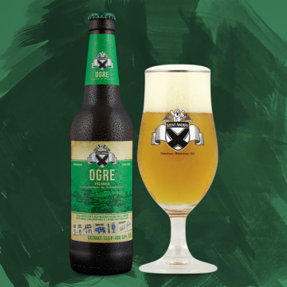

Típus: pilsner
A Szent András Sörfőzde egyik zászlóshajójának számító Ogre markánsan komlózott pilzeni sörélményt garantál, amelyhez határozott alkoholtartalom és izgalmas aroma párosul. Így született meg a tradicionális, cseh ivósör jellegű mestermunka. Nevét az ötletindítóról, Marosvári „Ogre” Lászlóról, az ország egyik leghíresebb sörszakértőjéről kapta, akivel közösen álmodtuk meg az Ogre Bácsi Söregyetemét és előadásait.